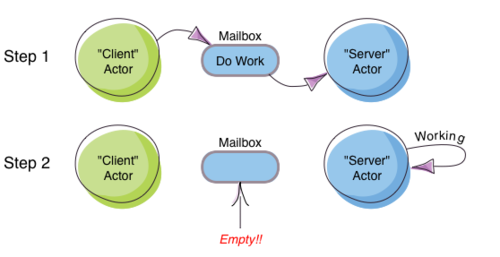

DIC Actor Ops: Create, Send, Become, Supervise
Table of Contents
- 1. Actor Ops: Create, Send, Become, Supervise
- 1.1. Actor in Scala, contd
- 1.2. An Actor in Java
- 1.3. Create an Actor
- 1.4. Actor System
- 1.5. Actor Lifecycle
- 1.6. Send
- 1.7. Become - Ex: HotSwapActor
- 1.8. Become Overview
- 1.9. Become - Why?
- 1.10. Advanced
become, Finite State Machines, and P3 - 1.11. Actor Hierarchy and Name Resolution
- 1.12. Become – Add to the Stack, Not Replace
- 1.13. Supervise
- 1.14. DeathWatch
- 2. Routers, Dispatchers, and Schedulers
- 3. Futures and Promises
- 4. Distributed Actor System
- 5. Termination
- 6. Large Scale Examples of Akka + Scala
- 7. TypeSafe Activator: Akka Get Started
- 8. References
- 9. End
This is part of Akka Actors with Scala.
1 Actor Ops: Create, Send, Become, Supervise
case class Greeting (who: String)
class GreetingActor extends Actor {
def receive = {
case Greeting(who) =>
sender ! (s"Hello, $who! Thanks.")
}
}
1.1 Actor in Scala, contd
val acsy = ActorSystem("WSU-CEG-7370-Actors")
val grtr = acsy . actorOf(Props[GreetingActor], "greeter")
grtr ! Greeting("Brad Pitt")
Propsis a configuration class to specify options for the creation of actors.- Try the above in scala REPL. You need the import shown below.
import akka.actor.{ ActorRef, ActorSystem, Props, Actor }- glitch: akka://WSU-CEG-7370-Actors/deadLetters
1.2 An Actor in Java
public class Greeting implements Serializable { public final String who; public Greeting(String who) { this.who = who; } }
- Continued …
1.2.1 An Actor in Java, contd-1
public class GreetingActor extends UntypedActor { LoggingAdapter log = Logging.getLogger(getContext().system(), this); public void onReceive(Object message) throws Exception { if (message instanceof Greeting) getSender.tell("Hello " + ((Greeting) message).who + " Thanks."); } }
- Continued …
1.2.2 An Actor in Java, contd-2
ActorSystem acsy = ActorSystem.create("WSU-CEG-7370-Actors"); ActorRef grtr = acsy . actorOf( new Props(GreetingActor.class), "greeter"); grtr.tell(new Greeting("Brad Pitt"));
1.3 Create an Actor
- Akka Actor receive message loop is exhaustive, different from Erlang and the late Scala Actors.
- Provide a pattern match for all messages that the actor can accept.
- To handle unknown messages have a default case
case _ => ... - Killing an Actor:
victim ! Kill context.system.shutdown()the ActorSystem when everything’s finished
1.4 Actor System
- Akka Actors: Extremely lightweight (2.7 Million per GB RAM)
- Messages are the "kinetic energy" in an actor system.
- Actors can have lots of buffered "potential energy", but can't do anything with it until triggered by a message.
- Allocate (internal) threads:
ActorSystem acsy = ActorSystem.create("WSU-CEG-7370-Actors"); - Everything is asynchronous and lockless
- Several actor systems, possibly with different configurations, can co-exist
1.5 Actor Lifecycle

Figure 1: Actor Lifecycle
1.6 Send
- The method named
receivedefines how messages are handled. !akatell.- Asynchronous and Non-blocking – "Fire-forget"
- Order of send = order of arrival in the mailbox of receiving actor. Message ordering is guaranteed on a per-sender basis.
- The size of the mailbox can be bounded or unbounded.
def ! (message: Any)
(implicit sender: ActorRef = Actor.noSender)?sends a message asynchronously and returns aFuturerepresenting a possible reply. Akaask.
1.7 Become - Ex: HotSwapActor
import akka.actor._
class HotSwapActor extends Actor {
import context._
def angry: Receive = {
case "ang" => sender ! "I am already angry >:("
case "hap" => become(happy)
}
def happy: Receive = {
case "hap" => sender ! "I am already happy :-)"
case "ang" => become(angry)
}
def receive = {
case "ang" => become(angry)
case "hap" => become(happy)
}
}
1.8 Become Overview
- Behaviors can be pushed and popped
context.becomeReplaces the current behavior (i.e., the top of the behavior stack)- Will now react according to the new behavior to the messages
context.unbecomepop the stack
1.9 Become - Why?
- Implement finite state machines
import akka.actor.FSM - Spawn up an empty generic worker actor that can become whatever the master needs
- Let a highly contended actor adaptively transform into an actor pool or a Router
- Implement graceful degradation
1.10 Advanced become, Finite State Machines, and P3
- http://www.typesafe.com/activator/template/akka-sample-fsm-scala
- WSU CEG 7370 P3: Understand the example above, and answer the questions TBD.
1.11 Actor Hierarchy and Name Resolution

Figure 2: Actor Hierarchy and Name Resolution
1.12 Become – Add to the Stack, Not Replace
import akka.event.Logging; import akka.actor._
case object Swap
class Swapper extends Actor { import context._
val log = Logging(system, this)
def receive = {
case Swap =>
log.info("Hi")
become({
case Swap =>
log.info("Ho")
unbecome() // just for fun
}, discardOld = false) /* not replace */ }}
object SwapperApp extends App {
val sys = ActorSystem("SwapperSystem")
val a = sys.actorOf(Props[Swapper], name="swapper")
// alternately logs Hi, Ho, ...
a!Swap; a!Swap; a!Swap; a!Swap; a!Swap; a!Swap
}
1.13 Supervise
- Every single actor has a default supervisor strategy. Which is usually sufficient. But it can be overridden.
- When an actor crashes, its parent can either
restart,stopit, orescalatethe failure up the hierarchy of actors. - A chain of responsibility, all the way to the top.
- "Let it crash!"
- Provides clean separation of business logic and error handling
- Traditional failure management:
- You are given a single thread of control
- Need to do all explicit error handling WITHIN this single thread
- Errors do not propagate between threads
- Leads to defensive programming, with error handling tangled with business logic
1.14 DeathWatch
Register to receive
Terminatedmessage provided by theDeathWatchcomponent of the actor system.import akka.actor.{ Actor, Props, Terminated } class WatchActor extends Actor { val child = context.actorOf(Props.empty, "child") context.watch(child) // registration var lastSender = system.deadLetters def receive = { case "kill" => context.stop(child); lastSender = sender() case Terminated(`child`) => lastSender ! "finished" } }- Note the back-quotes in
Terminated(`child`)
2 Routers, Dispatchers, and Schedulers
- A router is a type of actor. Routes incoming messages to outbound actors.
- Akka download comes with several
akka.routingstrategies:- RoundRobinRoutingLogic
- RandomRoutingLogic
- SmallestMailboxRoutingLogic
- BroadcastRoutingLogic
- ScatterGatherFirstCompletedRoutingLogic
- ConsistentHashingRoutingLogic
2.1 Execution Contexts
- Think of execution contexts as thread pools.
ExecutionContextis similar tojava.util.concurrent.Executor.import scala.concurrent.ExecutionContext
2.2 Dispatchers
- A dispatcher chooses an actor and a message from the actors mbox, and allocates a thread.
- Every ActorSystem will have a default dispatcher. Dispatchers
implement the
ExecutionContextinterface. - Each actor is configured to be run on a
MessageDispatcher, and that dispatcher doubles as anExecutionContext. - Pinned dispatcher: Each actor has its own dedicated thread. Ideal for blocking operations.
- Calling Thread dispatcher: Provides a deterministic execution order
2.3 The Balancing Dispatcher
- Balancing dispatcher: Redistribute the work from busy actors to idle ones.
- All actors it handles share a mbox. A "work stealing" dispatcher.
- BalancingDispatcher is an actor. It is in-charge of sending messages to several actors (known as workers).
2.3.1 The Balancing Dispatcher

Figure 3: balancing-workload-across-nodes-with-akka-2
2.4 Throttling
- Message Throttler: E.g., no more than 3 messages in 1 second.
printer: A simple actor that prints whatever it receives
class PrintActor extends Actor { def receive = { case x ⇒ println(x) } } val printer = system.actorOf(Props[PrintActor])TimerBasedThrottlerval throttler = system.actorOf( Props(classOf[ TimerBasedThrottler ], 3 msgsPer 1.second)) throttler ! SetTarget(Some(printer)) throttler ! "1"; throttler!"2"; throttler!"3" // These will wait for a second throttler ! "4"; throttler ! "5"
2.5 Circuit Breakers
- A circuit breaker provides stability and prevents cascading failures in distributed systems.
import
akka.pattern.CircuitBreaker, …class D extends Actor with ActorLogging { import context.dispatcher val breaker = new CircuitBreaker( context.system.scheduler, maxFailures = 5, callTimeout = 10.seconds, resetTimeout = 1.minute). onOpen(notifyMeOnOpen()) def notifyMeOnOpen(): Unit = log.warning( "My CircuitBreaker is now open, and " + "will not close for one minute")
2.6 Actor scheduling
- You can schedule sending of messages and execution of tasks (functions or Runnable).
Schedule to send the "foo"-message to the testActor after 50ms:
system.scheduler().scheduleOnce( Duration.create(50, TimeUnit.MILLISECONDS), testActor, "foo", system.dispatcher(), null )
3 Futures and Promises
- Akka gets Futures and Promises from Scala.
- A Future is a placeholder object for a result that has not been computed yet. A related CS term is lazy evaluation.
- A Future may only be assigned once. Needs an
ExecutionContext Invoke the
futuremethod which starts an asynchronous computation and returns a future. The result becomes available once the future completes.import scala.concurrent.{ future, promise } import scala.concurrent.ExecutionContext.Implicits.global val s = socialNetwork.createSessionFor("user", credentials) val f: Future[List[Friend]] = future { s.getFriends() // may take a while }
3.1 Promises
A Promise is a writable, single-assignment container that completes a future. Methods:
success,failure,completeimport scala.concurrent.{ future, promise } import scala.concurrent.ExecutionContext.Implicits.global val p = promise[T] val f = p.future val prdcr = future { // producer val r = produceSomething() p . success . r continueDoingSomethingUnrelated() } val cnsmr = future { // consumer startDoingSomething() f . onSuccess { case r => doSomethingWithResult() }}
4 Distributed Actor System

Figure 4: Distributed Actor System
4.1 Actor References
- Actor references may be obtained by (i) creating actors or (ii) looking them up
- Typically, we create actors beneath the guardian actor using the
ActorSystem.actorOfmethod and then … - Spawn the actor tree using
ActorContext.actorOf.
4.1.1 Looking up Actors by Concrete Path
ActorSystem.actorSelectionmethod- Send a message, such as the built-in
Identifymessage, to the actor and use thesenderreference of a reply from the actor. actorForis deprecated in favor ofactorSelectionbecause actor references acquired with actorFor behave differently for local and remote actors. Beware: actorOf vs. actorSelection vs. actorFor- Matching on paths similar to shells «*» and «?»:
context.actorSelection("../*") ! msg
4.1.2 Absolute vs. Relative Paths
- Send a message to a specific sibling:
context . actorSelection ("../brother") ! msg- Absolute paths:
context.actorSelection("/user/serviceA") ! msg
4.2 Remote Actors and Akka Clusters
- Remote Actors ActorSystem configuration

Figure 5: Remote Actors ActorSystem configuration
4.3 Clusters
- Automatic cluster-wide deployment
- Decentralized P2P gossip-based cluster membership
- Leader “election”
- Adaptive load-balancing (based on runtime metrics)
- Automatic replication with automatic fail-over upon node crash
- Automatic adaptive cluster rebalancing
- Highly available configuration service
4.4 Enable Clustering
akka {
actor {
provider = "akka.cluster.ClusterActorRefProvider"
...
}
extensions = ["akka.cluster.Cluster"]
cluster {
seed-nodes = [
"akka://ClusterSystem@127.0.0.1:2551",
"akka://ClusterSystem@127.0.0.1:2552"
]
auto-down = on
}
}
4.5 Remote Deployment

Figure 6: Remote Deployment
5 Termination
What Does "Finished" Mean? The most natural answer to this question appears to be, "When all the Mailboxes are empty." Natural, yes; correct, no. :)

Figure 7: Actor System terminated?
5.1 The Reaper

Figure 8: Actor System Reaper
5.2 Reaper Source Code
import akka.actor.{Actor, ActorRef, Terminated}
import scala.collection.mutable.ArrayBuffer
object Reaper { case class WatchMe(ref: ActorRef); }
abstract class Reaper extends Actor {
import Reaper._
val watched = ArrayBuffer.empty[ActorRef]
/* Derivations must implement this method. Called
* when everything is dead */
def allSoulsReaped(): Unit
final def receive = {
case WatchMe(ref) =>
context.watch(ref)
watched += ref
case Terminated(ref) =>
watched -= ref
if (watched.isEmpty) allSoulsReaped()
}
}
5.3 PoisonPill

Figure 9: Application with PoisonPill
6 Large Scale Examples of Akka + Scala
- http://www.playframework.com/ "The High Velocity Web Framework For
Java and Scala" Built on Akka, Play provides predictable and
minimal resource consumption (CPU, memory, threads) for
highly-scalable applications. RESTful by default.
- REST stands for "Representational State Transfer". It describes a web architecture.
- Play is used in http://www.typesafe.com/platform/getstarted
- http://spray.io/ "Elegant, high-performance HTTP for your Akka
Actors."
sprayis an open-source toolkit for building REST/HTTP-based integration layers on top of Scala and Akka. Being asynchronous, actor-based, fast, lightweight, modular and testable it's a great way to connect your Scala applications to the world. - http://twitter.github.io/finagle Finagle is an extensible RPC system for the JVM. Finagle is written in Scala, but provides both Scala and Java APIs.
7 TypeSafe Activator: Akka Get Started
- Reactive Applications: Concurrency + events
- Play Framework
- Akka Runtime
- Scala Programming Language
- Activator Reactive Developer Environment
- http://www.typesafe.com/platform/getstarted "The best way to start learning Akka …"
7.1 Activator Practical Details
sshto Laptop/OSIS Lab machine130.108.17.112% /usr/local/activator-1.1.1/activator ui -Dhttp.address=130.108.17.112 -Dhttp.port=8080 -Dbrowser=/usr/bin/google-chrome- Copies/Creates its applications in
~/.activator/and~
7.2 Akka, without Activator, Practical Details
Akka can be used without defining a configuration, since sensible default values are provided.
// application.conf at the root of the class path. akka { loggers = ["akka.event.slf4j.Slf4jLogger"] loglevel = "DEBUG" stdout-loglevel = "WARNING" actor { provider = "akka.cluster.ClusterActorRefProvider" default-dispatcher { # set to 1 for as fair as possible throughput = 10 } } remote { netty.tcp.port = 2552 } }
8 References
- https://doc.akka.io/docs/akka/current/ Nearly all the code snippets and figures are from here. Reference.
- Jonas Boner, "Above the Clouds: Introducing Akka", 2011. Web search. Video or pdf. Highly recommended.